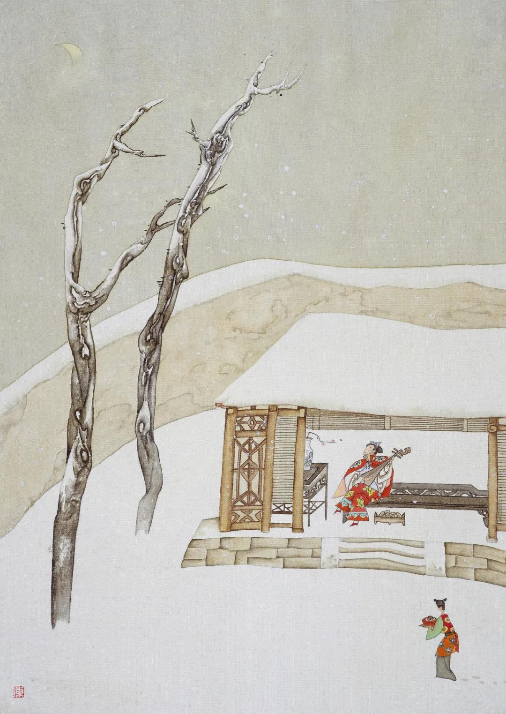

第三十八回 王六儿棒槌打捣鬼 潘金莲雪夜弄琵琶
第三十八回 王六儿棒槌打捣鬼 潘金莲雪夜弄琵琶#
词曰：
银筝宛转，促柱调弦，声绕梁间。巧作秦声独自怜。指轻妍，风回雪旋，缓扬清曲，响夺钧天。说甚么别鹤乌啼，试按《罗敷陌上》篇，休按《罗敷陌上》篇。
话说冯婆子走到前厅角门首，看见玳安在厅槅子前，拿着茶盘儿伺候。玳安望着冯妈努嘴儿：“你老人家先往那里去，俺爹和应二爹说了话就起身。已先使棋童儿送酒去了。”那婆子听见，两步做一步走的去了。原来应伯爵来说：“揽头李智、黄四派了年例三万香蜡等料钱粮下来，该一万两银子，也有许多利息。上完了批，就在东平府见关银子，来和你计较，做不做？”西门庆道：“我那里做他！揽头以假充真，买官让官。我衙门里搭了事件，还要动他。我做他怎的！”伯爵道：“哥若不做，叫他另搭别人。你只借二千两银子与他，每月五分行利，叫他关了银子还你，你心下何如？”西门庆道：“既是你的分上，我挪一千银子与他罢。如今我庄子收拾，还没银子哩。”伯爵见西门庆吐了口儿，说道：“哥若十分没银子，看怎么再拨五百两货物儿，凑个千五儿与他罢，他不敢少下你的。”西门庆道：“他少下我的，我有法儿处。又一件，应二哥，银子便与他，只不叫他打着我的旗儿，在外边东诓西骗。我打听出来，只怕我衙门监里放不下他。”伯爵道：“哥说的什么话，典守者不得辞其责。他若在外边打哥的旗儿，常没事罢了，若坏了事，要我做甚么？哥你只顾放心，但有差池，我就来对哥说。说定了，我明日叫他好写文书。”西门庆道：“明日不教他来，我有勾当。叫他后日来。”说毕，伯爵去了。
西门庆叫玳安伺候马，带上眼纱，问棋童去没有。玳安道：“来了，取挽手儿去了。”不一时，取了挽手儿来，打发西门庆上马，迳往牛皮巷来。不想韩道国兄弟韩二捣鬼，耍钱输了，吃的光睁睁儿的，走来哥家，问王六儿讨酒吃。袖子里掏出一条小肠儿来，说道：“嫂，我哥还没来哩，我和你吃壶烧酒。”那妇人恐怕西门庆来，又见老冯在厨下，不去兜揽他，说道：“我是不吃。你要吃拿过一边吃去，我那里耐烦？你哥不在家，招是招非的，又来做什么？”那韩二捣鬼，把眼儿涎睁着，又不去，看见桌底下一坛白泥头酒，贴着红纸帖儿，问道：“嫂子，是那里酒？打开筛壶来俺每吃。耶嚛！你自受用！”妇人道：“你趁早儿休动，是宅里老爹送来的，你哥还没见哩。等他来家，有便倒一瓯子与你吃。”韩二道：“等什么哥？就是皇帝爷的，我也吃一钟儿！”才待搬泥头，被妇人劈手一推，夺过酒来，提到屋里去了。把二捣鬼仰八叉推了一交，半日扒起来，恼羞变成怒，口里喃喃呐呐骂道：“贼淫妇，我好意带将菜儿来，见你独自一个冷落落，和你吃杯酒。你不理我，倒推我一交。我教你不要慌，你另叙上了有钱的汉子，不理我了，要把我打开，故意儿嚣我，讪我，又［走多］我。休叫我撞见，我叫你这不值钱的淫妇，白刀子进去红刀子出来！”妇人见他的话不妨头，一点红从耳边起，须臾紫胀了双腮，便取棒槌在手，赶着打出来，骂道：“贼饿不死的杀才！你那里吃醉了，来老娘这里撒野火儿。老娘手里饶你不过！”那二捣鬼口里喇喇哩哩骂淫妇，直骂出门去。不想西门庆正骑马来，见了他，问是谁，妇人道：“情知是谁，是韩二那厮，见他哥不在家，要便耍钱输了，吃了酒来殴我。有他哥在家，常时撞见打一顿。”那二捣鬼看见，一溜烟跑了。西门庆又道：“这少死的花子，等我明日到衙门里与他做功德！”妇人道：“又叫爹惹恼。”西门庆道：“你不知，休要惯了他。”妇人道：“爹说的是。自古良善彼人欺，慈悲生患害。”一面让西门庆明间内坐。西门庆吩咐棋童回马家去，叫玳安儿：“你在门首看，但掉着那光棍的影儿，就与我锁在这里，明日带到衙门里来。”玳安道：“他的魂儿听见爹到，不知走的那里去了。”
西门庆坐下。妇人见毕礼，连忙屋里叫丫鬟锦儿拿了一盏果仁茶出来，与西门庆吃，就叫他磕头。西门庆道：“也罢，到好个孩子，你且将就使着罢。”又道：“老冯在这里，怎的不替你拿茶？”妇人道：“冯妈妈他老人家，我央及他厨下使着手哩。西门庆又道：“头里我使小厮送来的那酒，是个内臣送我的竹叶清。里头有许多药味，甚是峻利。我前日见你这里打的酒，都吃不上口，我所以拿的这坛酒来。”妇人又道了万福，说：“多谢爹的酒，正是这般说，俺每不争气，住在这僻巷子里，又没个好酒店，那里得上样的酒来吃，只往大街上取去。”西门庆道：“等韩伙计来家，你和他计较，等着狮子街那里，替你破几两银子买所房子，等你两口子亦发搬到那里住去罢。铺子里又近，买东西诸事方便。”妇人道：“爹说的是。看你老人家怎的可怜见，离了这块儿也好。就是你老人家行走，也免了许多小人口嘴──咱行的正，也不怕他。爹心里要处自情处，他在家和不在家一个样儿，也少不的打这条路儿来。”说一回，房里放下桌儿，请西门庆进去宽了衣服坐。
须臾，安排酒菜上来，妇人陪定，把酒来斟。不一时，两个并肩叠股而饮。吃的酒浓时，两个脱剥上床交欢，自在玩耍。妇人早已床炕上铺的厚厚的被褥，被里熏的喷鼻香。西门庆见妇人好风月，一径要打动他。家中袖了一个锦包儿来，打开，里面银托子、相思套、硫黄圈、药煮的白绫带子、悬玉环、封脐膏、勉铃，一弄儿淫器。那妇人仰卧枕上，玉腿高跷，囗舌内吐。西门庆先把勉铃教妇人自放牝内，然后将银托束其根，硫黄圈套其首，脐膏贴于脐上。妇人以手导入牝中，两相迎凑，渐入大半。妇人呼道：“达达！我只怕你墩的腿酸，拿过枕头来，你垫着坐，我淫妇自家动罢。”又道：“只怕你不自在，你把淫妇腿吊着［入日］，你看好不好？”西门庆真个把他脚带解下一条来，拴他一足，吊在床槅子上低着拽，拽的妇人牝中之津如蜗之吐蜒，绵绵不绝，又拽出好些白浆子来。西门庆问道：“你如何流这些白？”才待要抹去，妇人道：“你休抹，等我吮咂了罢。”于是蹲跪在他面前吮吞数次，呜咂有声。咂的西门庆淫心辄起，掉过身子，两个干后庭花。龟头上有硫黄圈，濡研难涩。妇人蹙眉隐忍，半晌仅没其棱。西门庆颇作抽送，而妇人用手摸之，渐入大半，把屁股坐在西门庆怀里，回首流眸，作颤声叫：“达达！慢着些，后越发粗大，教淫妇怎生挨忍。”西门庆且扶起股，观其出入之势，因叫妇人小名：“王六儿，我的儿，你达不知心里怎的只好这一桩儿，不想今日遇你，正可我之意。我和你明日生死难开。”妇人道：“达达，只怕后来耍的絮烦了，把奴不理怎了？”西门庆道：“相交下来，才见我不是这样人。”说话之间，两个干够一顿饭时。西门庆令妇人没高低淫声浪语叫着才过。妇人在下，一面用手举股承受其精，乐极情浓，一泄如注。已而抽出那话来，带着圈子，妇人还替他吮咂净了，两个方才并头交股而卧。正是：一般滋味美，好耍后庭花。有词为证：
美冤家，一心爱折后庭花。寻常只在门前里走，又被开路先锋把住了他。放在户中难禁受。转丝缰勒回马，亲得胜弄的我身上麻，蹴损了奴的粉脸那丹霞。
西门庆与妇人搂抱到二鼓时分，小厮马来接，方才起身回家。到次日，到衙门里差了两个缉捕，把二捣鬼拿到提刑院，只当做掏摸土贼，不由分说，一夹二十，打的顺腿流血。睡了一个月，险不把命花了。往后吓的影也再不敢上妇人门缠搅了。正是：
恨小非君子，无毒不丈夫。
迟了几日，来保、韩道国一行人东京回来，备将前事对西门庆说：“翟管家见了女子，甚是欢喜，说爹费心。留俺府里住了两日，讨了回书。送了爹一匹青马，封了韩伙计女儿五十两银子礼钱，又与了小的二十两盘缠。”西门庆道：“够了。”看了回书，书中无非是知感不尽之意。自此两家都下眷生名字，称呼亲家，不在话下。韩道国与西门庆磕头拜谢回家。西门庆道：“韩伙计，你还把你女儿这礼钱收去，也是你两口儿恩养孩儿一场。”韩道国再三不肯收，说道：“蒙老爹厚恩，礼钱是前日有了。这银子小人怎好又受得？从前累的老爹好少哩！”西门庆道：“你不依，我就恼了。你将回家，不要花了，我有个处。”那韩道国就磕头谢了，拜辞回去。
老婆见他汉子来家，满心欢喜，一面接了行李，与他拂了尘上，问他长短：“孩子到那里好么？”这道国把往回一路的话，告诉一遍，说：“好人家，孩子到那里，就与了三间房，两个丫鬟伏侍，衣服头面不消说。第二日，就领了后边见了太太。翟管家甚是欢喜，留俺们住了两日，酒饭连下人都吃不了。又与了五十两礼钱。我再三推辞，大官人又不肯，还叫我拿回来了。”因把银子与妇人收了。妇人一块石头方落地，因和韩道国说：“咱到明日，还得一两银子谢老冯。你不在，亏他常来做作伴儿。大官人那里，也与了他一两。”正说着，只见丫头过来递茶。韩道国道：“这个是那里大姐？”妇人道：“这个是咱新买的丫头，名唤锦儿。过来与你爹磕头！”磕了头，丫头往厨下去了。
老婆如此这般，把西门庆勾搭之事，告诉一遍，“自从你去了，来行走了三四遭，才使四两银子买了这个丫头。但来一遭，带一二两银子来。第二的不知高低，气不愤走来这里放水。被他撞见了，拿到衙门里，打了个臭死，至今再不敢来了。大官人见不方便，许了要替我每大街上买一所房子，叫咱搬到那里住去。”韩国道：“嗔道他头里不受这银子，教我拿回来休要花了，原来就是这些话了。”妇人道：“这不是有了五十两银子，他到明日，一定与咱多添几两银子，看所好房儿。也是我输了身一场，且落他些好供给穿戴。”韩道国道：“等我明日往铺子里去了，他若来时，你只推我不知道，休要怠慢了他，凡事奉承他些儿。如今好容易赚钱，怎么赶的这个道路！”老婆笑道：“贼强人，倒路死的！你到会吃自在饭儿，你还不知老娘怎样受苦哩！”两个又笑了一回，打发他吃了晚饭，夫妻收拾歇下。到天明，韩道国宅里讨了钥匙，开铺子去了，与了老冯一两银子谢他。俱不必细说。
一日，西门庆同夏提刑衙门回来。夏提刑见西门庆骑着一匹高头点子青马，问道：“长官那匹白马怎的不骑，又换了这匹马？到好一匹马，不知口里如何？”西门庆道：“那马在家歇他两日儿。这马是昨日东京翟云峰亲家送来的，是西夏刘参将送他的。口里才四个牙儿，脚程紧慢都有他的。只是有些毛病儿，快护糟踅蹬。初时骑了路上走，把膘跌了许多，这两日内吃的好些儿。”夏提刑道：“这马甚是会行，但只好骑着［足鹿］街道儿罢了，不可走远了他。论起在咱这里，也值七八十两银子。我学生骑的那马，昨日又瘸了。今早来衙门里来，旋拿帖儿问舍亲借了这匹马骑来，甚是不方便。”西门庆道：“不打紧，长官没马，我家中还有一匹黄马，送与长官罢。”夏提刑举手道：“长官下顾，学生奉价过来。”西门庆道：“不须计较。学生到家，就差人送来。”两个走到西街口上，西门庆举手分路来家。到家就使玳安把马送去。夏提刑见了大喜，赏了玳安一两银子，与了回帖儿，说：“多上覆，明日到衙门里面谢。”
过了两月，乃是十月中旬时分。夏提刑家中做了些菊花酒，叫了两名小优儿，请西门庆一叙，以酬送马之情。西门庆家中吃了午饭，理了些事务，往夏提刑家饮酒。原来夏提刑备办一席齐整酒肴，只为西门庆一人而设。见了他来，不胜欢喜，降阶迎接，至厅上叙礼。西门庆道：“如何长官这等费心？”夏提刑道：“今年寒家做了些菊花酒，闲中屈执事一叙，再不敢请他客。”于是见毕礼数，宽去衣服，分宾主而坐。茶罢着棋，就席饮酒叙谈，两个小优儿在旁弹唱。正是得多少：
金尊进酒浮香蚁，象板催筝唱鹧鸪。

不说西门庆在夏提刑家饮酒，单表潘金莲见西门庆许多时不进他房里来，每日翡翠衾寒，芙蓉帐冷。那一日把角门儿开着，在房内银灯高点，靠定帏屏，弹弄琵琶。等到二三更，使春梅连瞧数次，不见动静。正是：银筝夜久殷勤弄，寂寞空房不忍弹。取过琵琶，横在膝上，低低弹了个《二犯江儿水》唱道：
闷把帏屏来靠，和衣强睡倒。
猛听得房檐上铁马儿一片声响，只道西门庆敲的门环儿响，连忙使春梅去瞧。春梅回道：“娘，错了，是外边风起，落雪了。”妇人又弹唱道：
听风声嘹亮，雪洒窗寮，任冰花片片飘。
一回儿灯昏香尽，心里欲待去剔，见西门庆不来，又意儿懒的动弹了。唱道：
懒把宝灯挑，慵将香篆烧。捱过今宵，怕到明朝。细寻思，这烦恼何日是了？想起来，今夜里心儿内焦，误了我青春年少！你撇的人，有上稍来没下稍。
且说西门庆约一更时分，从夏提刑家吃了酒归来。一路天气阴晦，空中半雨半雪下来，落在衣服上都化了。不免打马来家，小厮打着灯笼，就不到后边，迳往李瓶儿房来。李瓶儿迎着，一面替他拂去身上雪霰，接了衣服。止穿绫敞衣，坐在床上，就问：“哥儿睡了不曾？”李瓶儿道：“小官儿顽了这回，方睡下了。”迎春拿茶来吃了。李瓶儿问，“今夜吃酒来的早？”西门庆道：“夏龙溪因我前日送了他那匹马，今日为我费心，治了一席酒请我，又叫了两个小优儿。和他坐了这一回，见天气下雪，来家早些。”李瓶儿道：“你吃酒，叫丫头筛酒来你吃。大雪里来家，只怕冷哩。”西门庆道：“还有那葡萄酒，你筛来我吃。今日他家吃的是造的菊花酒，我嫌他香淆气的，我没大好生吃。”于是迎春放下桌儿，就是几碟嗄饭、细巧果菜之类。李瓶儿拿杌儿在旁边坐下。桌下放着一架小火盆儿。
这里两个吃酒，潘金莲在那边屋里冷清清，独自一个儿坐在床上。怀抱着琵琶，桌上灯昏烛暗。待要睡了，又恐怕西门庆一时来；待要不睡，又是那盹困，又是寒冷。不免除去冠儿，乱挽乌云，把帐儿放下半边来，拥衾而坐，正是：
倦倚绣床愁懒睡，低垂锦帐绣衾空。早知薄幸轻抛弃，辜负奴家一片心。
又唱道：
懊恨薄情轻弃，离愁闲自恼。
又唤春梅过来：“你去外边再瞧瞧，你爹来了没有？快来回我话。”那春梅走去，良久回来，说道：“娘还认爹没来哩，爹来家不耐烦了，在六娘房里吃酒的不是？”这妇人不听罢了，听了如同心上戳上几把刀子一般，骂了几句负心贼，由不得扑簌簌眼中流下泪来。一迳把那琵琶儿放得高高的，口中又唱道：
心痒痛难搔，愁怀闷自焦。让了甜桃，去寻酸枣。奴将你这定盘星儿错认了。想起来，心儿里焦，误了我青春年少。你撇的人，有上稍来没下稍。
西门庆正吃酒，忽听见弹的琵琶声，便问：“是谁弹琵琶？”迎春答道：“是五娘在那边弹琵琶响。”李瓶儿道：“原来你五娘还没睡哩。绣春，你快去请你五娘来吃酒。你说俺娘请哩。”那绣春去了。李瓶儿忙吩咐迎春：“安下个坐儿，放个钟箸在面前。”良久，绣春走来说：“五娘摘了头，不来哩。”李瓶儿道：“迎春，你再去请五娘去。你说，娘和爹请五娘哩。”不多时，迎春来说：“五娘把角门儿关了，说吹了灯，睡下了。”西门庆道：“休要信那小淫妇儿，等我和你两个拉他去，务要把他拉了来。咱和他下盘棋耍子。”于是和李瓶儿同来打他角门。打了半日，春梅把角门子开了。西门庆拉着李瓶儿进入他房中，只见妇人坐在帐中，琵琶放在旁边。西门庆道：“怪小淫妇儿，怎的两三转请着你不去！”金莲坐在床上，纹丝儿不动，把脸儿沉着，半日说道：“那没时运的人儿，丢在这冷屋里，随我自生自活的，又来瞅采我怎的？没的空费了你这个心，留着别处使。”西门庆道：“怪奴才！八十岁妈妈没牙──有那些唇说的？李大姐那边请你和他下盘棋儿，只顾等你不去了。”李瓶儿道：“姐姐，可不怎的。我那屋里摆下棋子了，咱们闲着下一盘儿，赌杯酒吃。”金莲道：“李大姐，你们自去，我不去。你不知我心里不耐烦，我如今睡也，比不的你们心宽闲散。我这两日只有口游气儿，黄汤淡水谁尝着来？我成日睁着脸儿过日子哩！”西门庆道：“怪奴才，你好好儿的，怎的不好？你若心内不自在，早对我说，我好请太医来看你。”金莲道：“你不信，叫春梅拿过我的镜子来，等我瞧。这两日，瘦的象个人模样哩！”春梅把镜子真个递在妇人手里，灯下观看。正是：
羞对菱花拭粉妆，为郎憔瘦减容光。闭门不管闲风月，任你梅花自主张。
西门庆拿过镜子也照了照，说道：“我怎么不瘦？”金莲道：“拿甚么比你！你每日碗酒块肉，吃的肥胖胖的，专一只奈何人。”被西门庆不由分说，一屁股挨着他坐在床上，搂过脖子来就亲了个嘴，舒手被里，摸见他还没脱衣裳，两只手齐插在他腰里去，说道：“我的儿，是个瘦了些。”金莲道：“怪行货子，好冷手，冰的人慌！莫不我哄了你不成？我的苦恼，谁人知道，眼泪打肚里流罢了。”乱了一回，西门庆还把他强死强活拉到李瓶儿房内，下了一盘棋，吃了一回酒。临起身，李瓶儿见他这等脸酸，把西门庆撺掇过他这边歇了。正是得多少：
腰瘦故知闲事恼，泪痕只为别情浓。